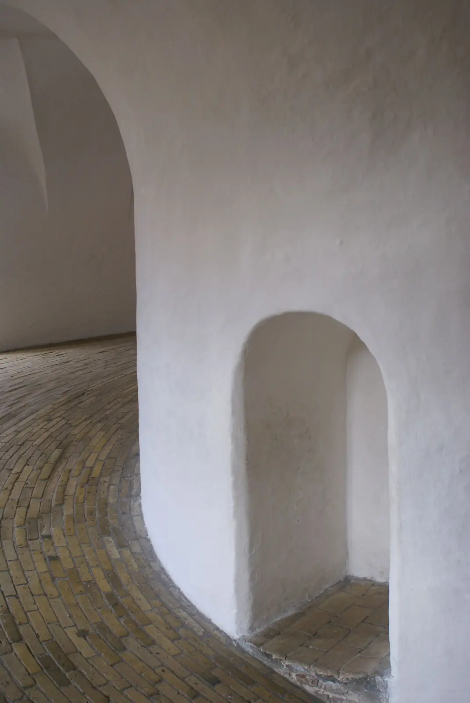
In this issue
Twelve rooms where shadow does the structural work, and the people who drew them stayed out of the frame.
Open the issueContents
Six pieces. One idea: that the most expensive material in a building is the light you let in, and the dark you keep.
Essay · p. 014
Shadow isa material.
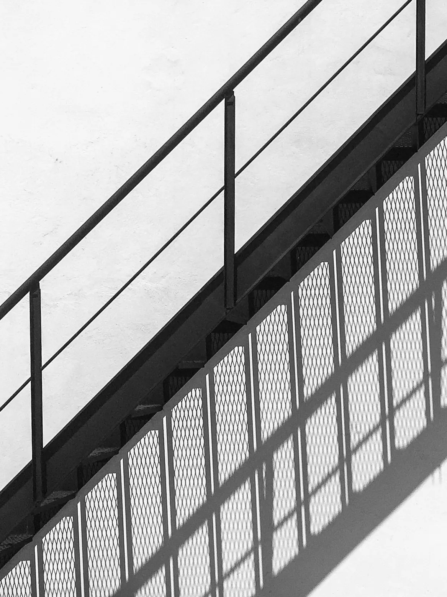
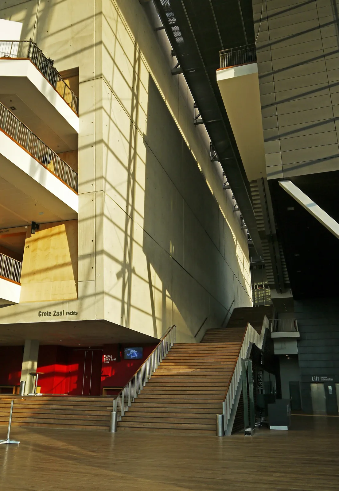
Architects talk about concrete, oak and steel as if those were the things we pay for. Walk any good room at four in the afternoon and you learn the truth: the budget went on a slot of sky, a deep reveal, a wall placed just so that the sun has something to fall against.
Shadow costs nothing to pour and everything to design. It needs mass to land on and an edge to start from. It moves, so the room is never the same room twice. This issue is about the people and places that treat darkness as a finish, not a failure.
“A wall is only finished when the sun has crossed it.From the essay
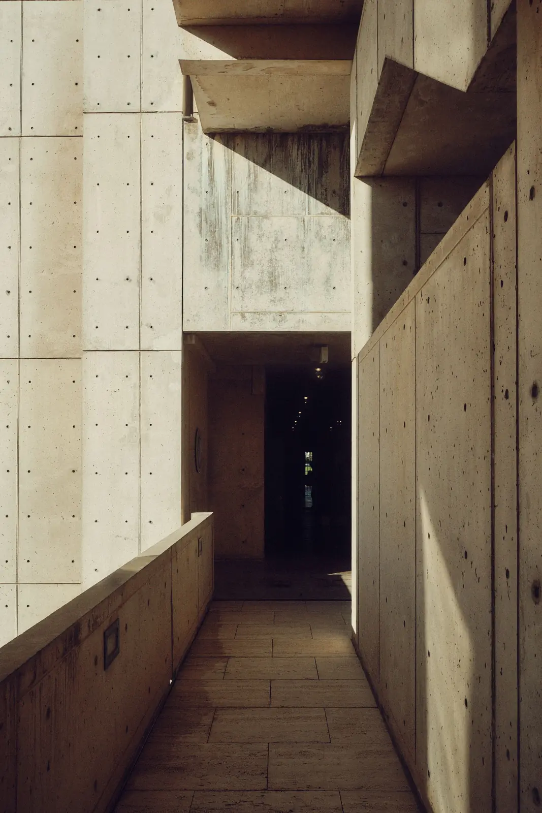
- Reading time
- 14 min
- Plates
- 9
- Set in
- Zodiak & Switzer
Twelve thresholds
01 / 08
A portfolio of stairs, arcades and corridors, the places a building asks you to slow down. Hover a plate.
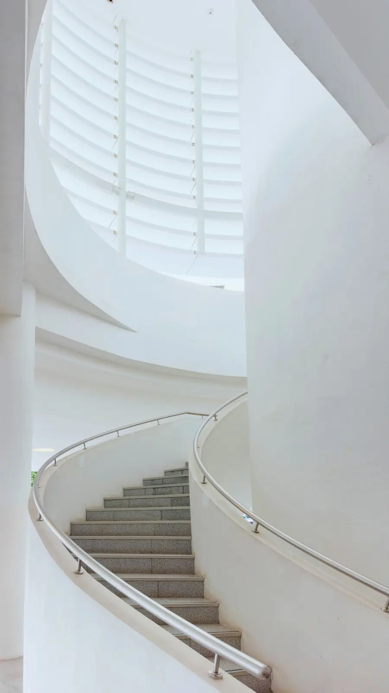
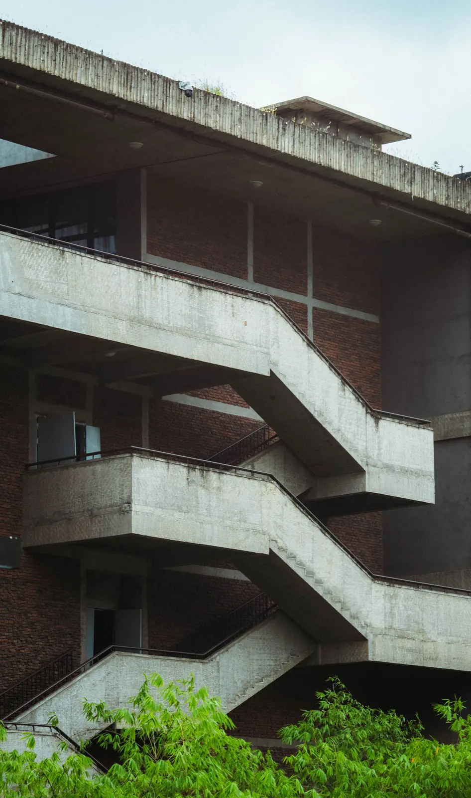
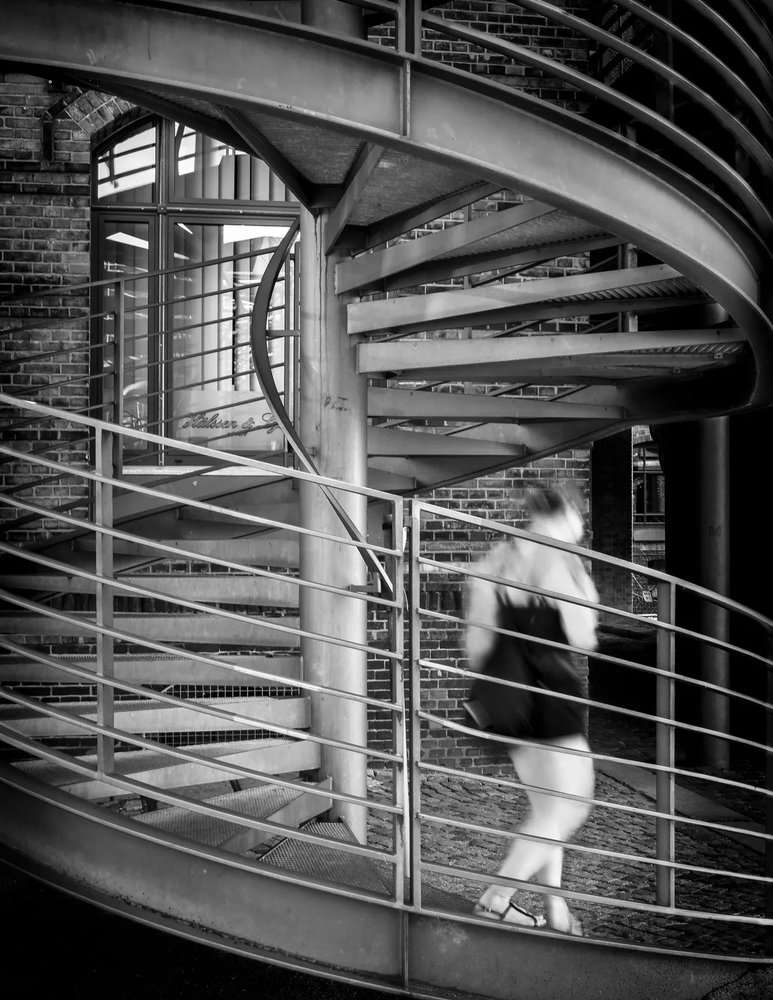
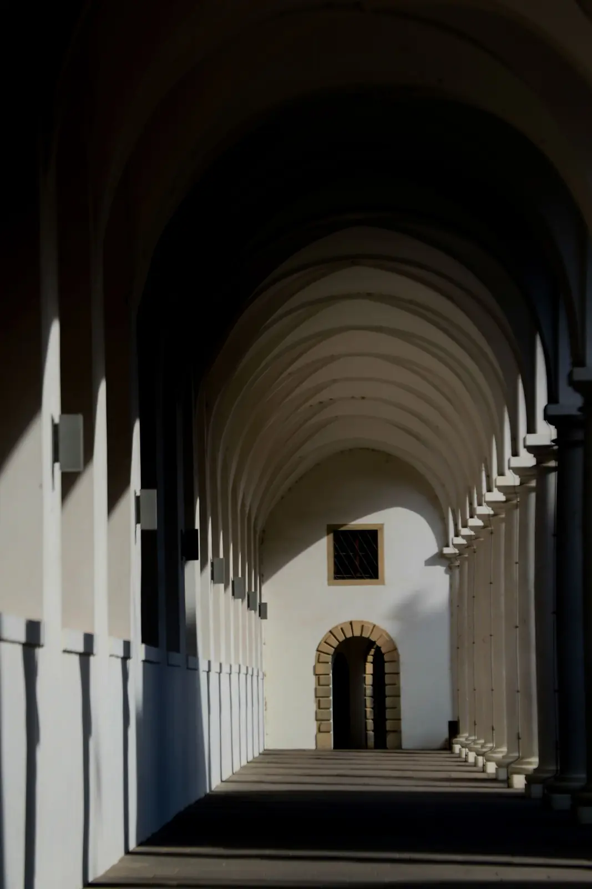
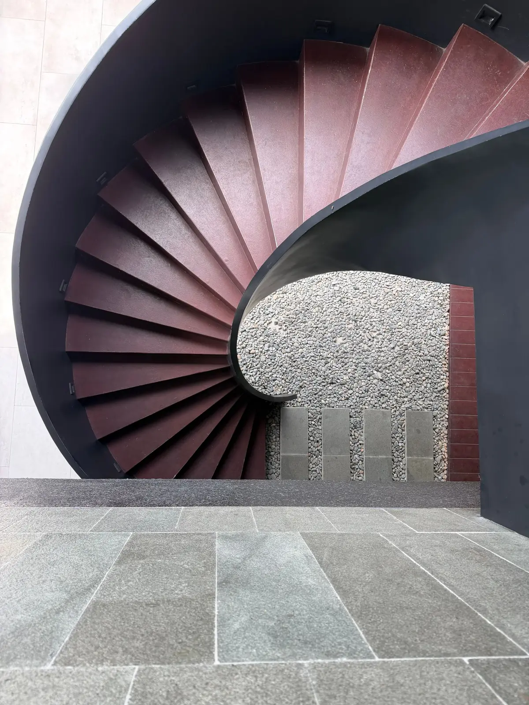
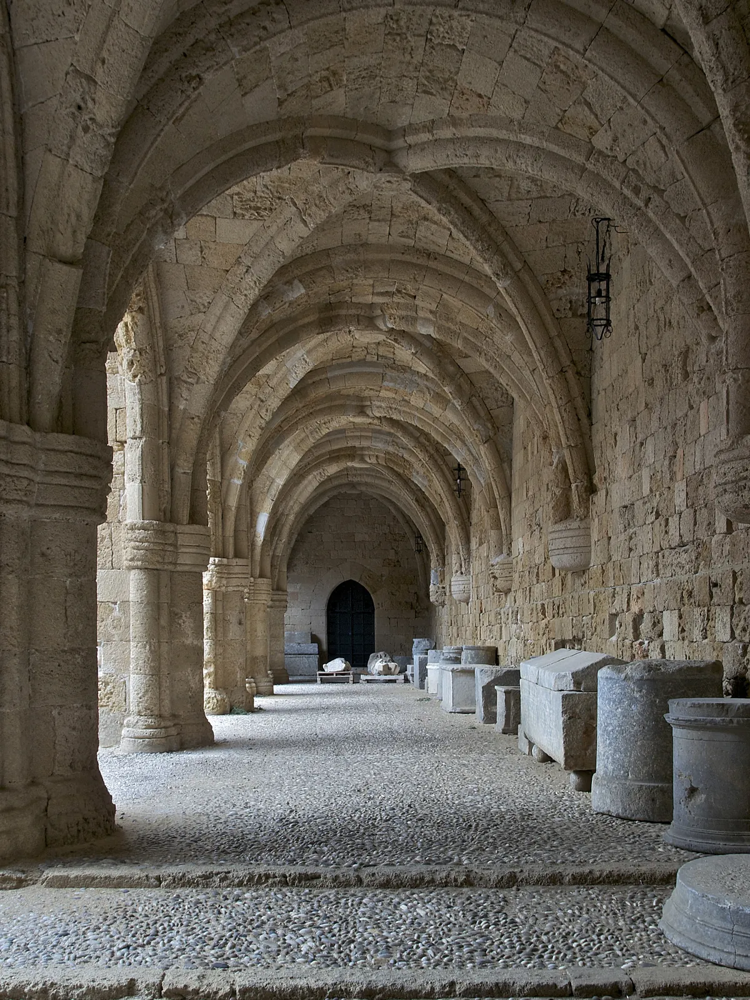
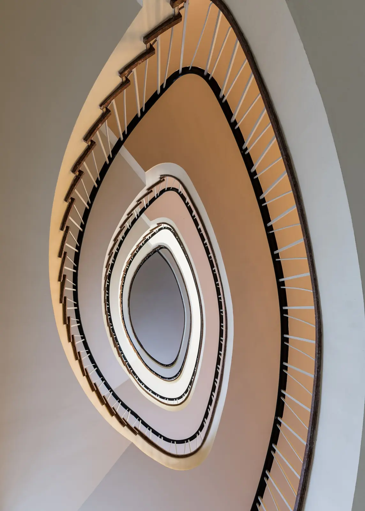
Light/Mass/Light/Mass
Silence·Threshold·Silence·Threshold
Edge/Shade/Edge/Shade
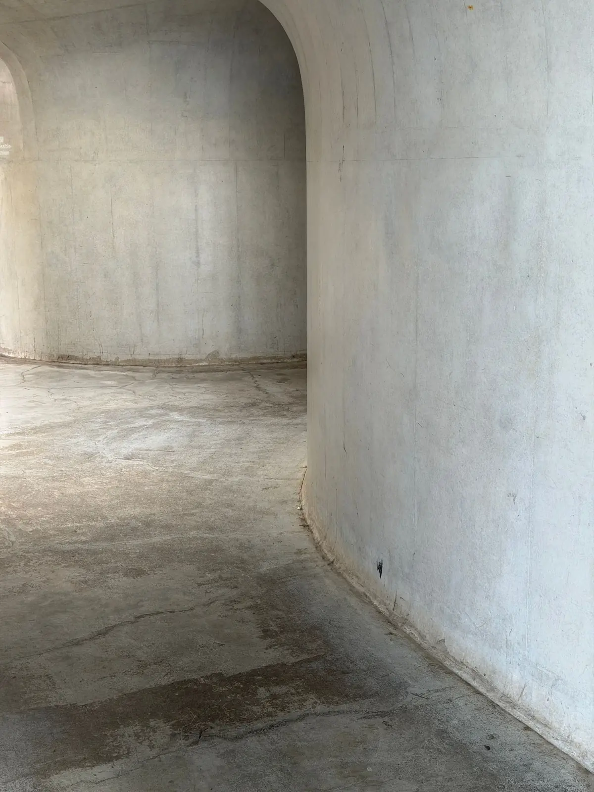
Printed to be kept.
- Pages
- 212
- Paper
- Uncoated, 240 gsm cover
- Binding
- Swiss, open spine
- Next issue
- 08 — Concrete Gardens
Concept only. Plinth is not a real magazine and nothing is sold or sent.